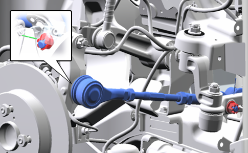
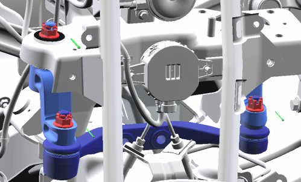
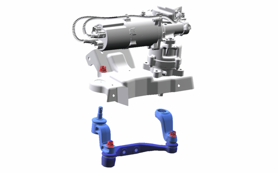
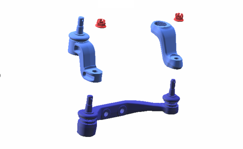
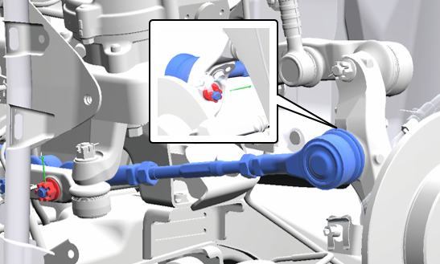

9-3 ステアリングロッド＆アーム
準備品
|
工具 |
ベアリングセパレータなど |
|
工具 |
68 mm 工具？ STOPPER SUB-ASSY, FR SUSPENSION取り外し用 |
構成図
|
1 |
ROD ASSY, STEERING (D5450-B1000) |
2 |
ROD ASSY, STEERING (D5450-B1000) |
|
3 |
ROD ASSY, RELAY (D5440-B1000) |
4 |
ARM, PITMAN (D5411-B1000-A) |
|
5 |
ARM ASSY, IDLER (D5430-B1000) |
6 |
NUT, CASTLE Ｗ/FRNAGE (D9321-81200) |
|
7 |
NUT, CASTLE (D9311-62200) |
8 |
WASHER, PITMAN ARM (D9241-23391) |
|
9 |
NUT, CASTLE Ｗ/FRNAGE (D9321-81200) |
10 |
NUT, CASTLE Ｗ/FRNAGE (D9321-81200) |
|
11 |
NUT, CASTLE Ｗ/FRNAGE (D9321-81200) |
12 |
PIN, COTTER (D9551-29250) |
|
13 |
PIN, COTTER (D9551-37400) |
14 |
PIN, COTTER (D9551-37400) |
|
15 |
PIN, COTTER (D9551-18250-B) |
16 |
PIN, COTTER (D9551-37400) |
取り外し前作業
-
フロントタイヤ取り外し5-1 フロントタイヤ
取り外し手順

1.ROD ASSY, STEERING取り外し
-
コッターピン、キャッスルナットを取り外しROD ASSY, STEERING を取り外す。

2.ACTUATOR ASSY, STEERING CONTROL切り離し
-
コッターピンを取り外し、キャッスルナットを取り外す。
-
ボルト(A)3本を取り外す。
-
ボルト(B)を緩める

-
タイヤ(またはフロントアクスル)を回転させて左旋回状態する。

3.ARM, PITMAN切り離し
-
SST(ベアリングセパレータなど)をARM, PITMANとACTUATOR ASSY, STEERING CONTROLの隙間に取り付ける。
-
SST(ベアリングセパレータなど)のボルトを少しずつ回し、ARM, PITMANとACTUATOR ASSY, STEERING CONTROLを切り離す。
-
SST(ベアリングセパレータなど)を取り外す。

4.ROD ASSY, RELAY取り外し
-
コッターピンを取り外し、キャッスルナットを緩める。

-
キャッスルナットを取り外し、ROD ASSY, RELAY、ARM ASSY, IDLER 、ARM, PITMANを取り外す。

-
ARM ASSY, IDLER 、ARM, PITMANを取り外す。
取り付け手順
1.ROD ASSY, RELAY取り付け
-
ARM ASSY, IDLER 、ARM, PITMANをROD ASSY, RELAYに取り付け、キャッスルナットを仮締めする。
-
ROD ASSY, RELAYを取り付け、キャッスルナットを仮締めする。
2.ARM, PITMANかん合
-
ACTUATOR SHAFTの欠歯部 (A) を、ARM（PITMAN）のセレーション位置 (B) に合わせ、位置を確認した上でかん合させる。

3.ACTUATOR ASSY, STEERING CONTROL取り付け
-
ボルト4本でACTUATOR ASSY, STEERING CONTROLを取り付ける。

-
ワッシャーおよびキャッスルナットを取り付ける。
-
新品のコッターピンを取り付ける。
-
キャッスルナットを締め付ける。
-
新品のコッターピンを取り付ける。
4.ROD ASSY, STEERING (RH) 取り付け
-
キャッスルナット2個を締め付ける。
-
新品のコッターピンを取り付ける。

5.ROD ASSY, STEERING (LH) 取り付け
-
キャッスルナット２個を締め付ける。
-
新品のコッターピンを取り付ける。
6.フロントタイヤ取り付け